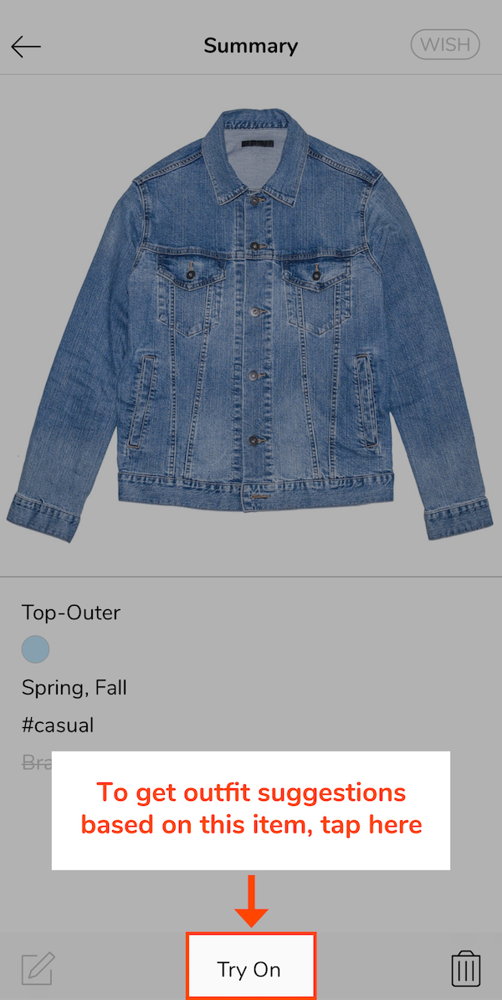
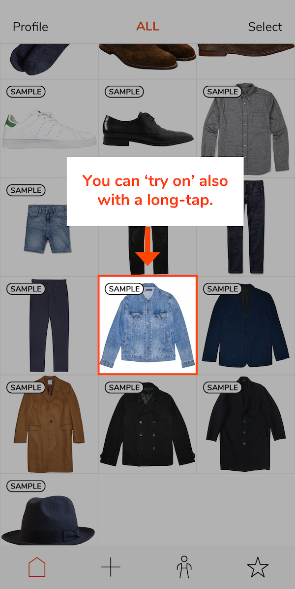
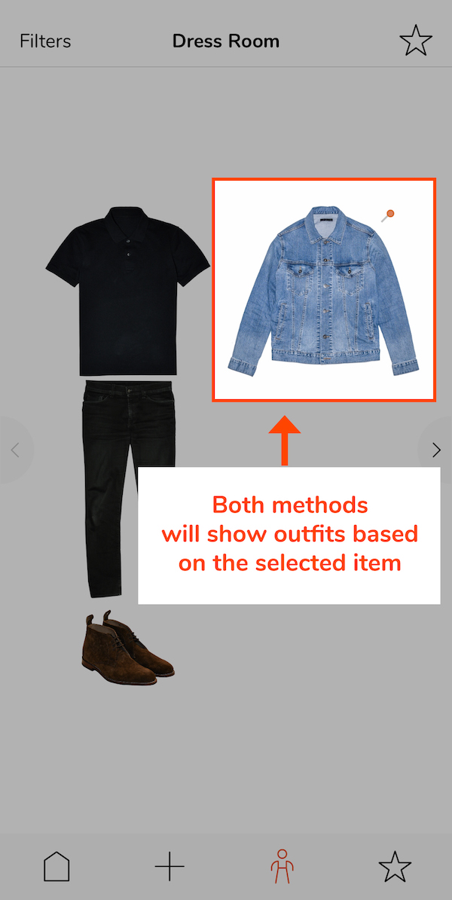
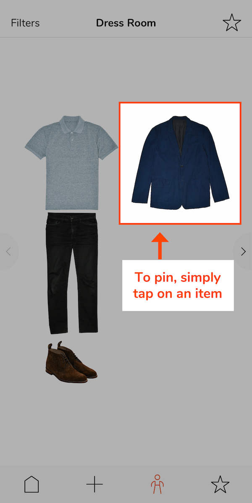
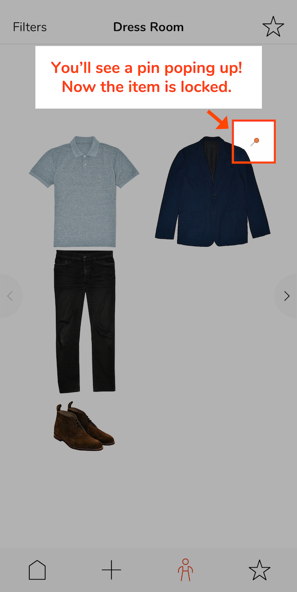

A. How to use the Home screen (Closet)
A1. Filtering closet content
Have you happened to have built a closet so large that you sometimes need to scroll down for a while to find a particular item? We’ve been there too 👊.
Next time you feel tempted to scroll, try using the closet filters accessible through the top bar of the Closet screen. Do you see the orange text that says ‘ALL’? Try tapping on it.
Do you see a new screen with a bunch of buttons? Try tapping on one of these buttons. You will be brought back to the Closet screen with only the items that match the description of the button you chose.
1. Tap to open

2. Select a filter

3. Filtered closet

Demo video
A2. Reviewing and editing item details
To review details of garments and accessories you have imported into your digital closet, tap on the item’s image in the Closet screen. What you will see is the Summary screen which shows various details of the item including its picture, body part, color, seasons, styles, and brand.
In the screen, you can access four functions.
- You can tag the item as wished-for (More details in Section A3).
- You can delete the item by tapping on the trash icon in the bottom right corner of the screen.
- You can ‘Try On’ the item, meaning that you can instantly check outfit options based on the item (More details in Section A4).
- Lastly, you can tap on the edit icon in the bottom left corner to edit the details of the item.
A3. ‘WISH’ button: Marking items you’d like to buy in the future
When you find items that you’d like to consider buying in the future, don’t try just to remember them. The ‘WISH’ button, located in the top right-hand corner of the Item Details screen, was designed to help with this exact situation.
Next time you find an item you’d like to consider getting in the future, find a photo of the product, import it into Lookscope and then WISH-tag it. You will see that this new wished-for item is labeled in the Closet screen as well as in the Star Looks menu.
Demo video
A4. ‘Try On’: Bringing a particular item into the Dress Room
Have you ever had a situation where you woke up one day with a clear idea about a particular pants/jacket/shoes or another item in mind for the day? Next time you are in the situation, try the ‘Try On’ feature. This feature will bring the item to the Dress Room and suggest an outfit based on the item. It can be accessed from two screens in the app.
i) From the Item Details screen
One, you can go into the ‘Item Details’ screen by tapping on an item in your Closet screen, and then, tap on the ‘Try On’ button at the bottom.
ii) From the Closet screen
The second way is actually hidden. In the Closet screen, you can long-tap (that is, ‘touch and hold the finger in the position’) on an item you’d like to "try on." Then, count 1, … 2, ... Are you in the Dress Room yet?
1. Method 1
2. Method 2
3. Outfit result
Demo video 1
Demo video 2
A5. Deleting multiple items at the same time
To delete multiple items at the same time in the Closet screen, tap on the ‘Select’ button in the top right corner of the screen to enter the Selection mode. When you enter the mode, you will see the ‘X items selected’ label showing up in the top bar. Tap on the items that you’d like to delete. When you select items, you will see borders appearing around the items. When you are done with your selection, tap on the trash icon button at the bottom of the screen and confirm.
❗Before you confirm the deletion, make sure you double-check that you didn’t include any unintended items. Deleting items here will permanently remove their data from your phone as well as your iCloud space.
B. How to add items
B1. Adding sample garments and accessories
Sample items are digital garments and accessories of somewhat standard styles that our team has prepared to help new users with their initial closet building. We provided these items to be used as temporary substitutes for pictures of your garments and accessories.
To add sample items, tap on the Add Item button (‘+’) in the bottom bar. Then, make sure that you are in the Samples screen instead of the Library screen. (In the bottom bar, ‘Samples’ should be highlighted in red-orange.)
Tap on sample items that you’d like to add to your closet. You can scroll up and down the view as well as left and right within each body part section.
When you are ready to import, tap on the ‘Import’ button in the top right corner. You should see the selected items in the Closet screen!
Demo video
B2. Adding custom clothing photo
Adding custom clothing photos is a great way to build a personalized wardrobe.
Start by tapping on the Add Item button (‘+’). Then, tap on the Library button at the bottom bar if you are not in the Library import screen already. (In the bottom bar, ‘Library’ should be highlighted in red-orange.)
Choose a clothing photo you’d like to import from your Photo Library. Tapping on a picture will take you to the next screen where you resize and crop.
Manipulate the size and position of the selected photo and try to get the optimal result using the red-orange guides. The ideal result you want is that the clothing item in the picture nicely fits and is centered in the red-orange guide box. When you are satisfied with the size and the position of the clothing item, tap on ‘Next’ in the top right corner of the screen. The next screen is where you edit color and background of the item image you just resized and cropped.
Demo video
B3. Editing colors of the imported image for best result
Improving the color of the image can make it look better when it is presented as part of an outfit in the Dress Room.
To edit color, try applying one of the filters by tapping on them. You should see that your clothing image change as you select different filters. If you are not completely satisfied with any of the default filter options, tap on the most decent one, and then tap on the filter button again for fine tuning (basically double-tap). You should see a set of sliders. Use them to fine-tune the color temperature (for white balance), exposure and shadow values to get the best result.
Demo video
B4. Editing background of the imported image for best result
Once you are done with editing color, you can choose to edit background as well. From the perspective of getting the best user experience in the Dress Room, it is preferred that each item image has the item in the center and is white everywhere else.
To edit background, tap on the Background button in the bottom bar. You will see three buttons showing up (Auto, Eraser, Restorer).
i) Auto-remove
If your image has a relatively consistent color in the background, try the ‘Auto’ feature, which is designed to remove the background color based on color contrast automatically. Typically, you get the best result if the picture has a consistent background color and creates a sharp color contrast to the item image in the center.
ii) Eraser and Restorer
Use Eraser or Restorer for manual edits. As the names imply, Eraser is for removing a portion of the image and Restorer is for restoring the parts that have been erased.
iii) Brush size & Undo When you are in either mode, you can change the brush size by tapping on the black circle located in the bottom right corner of the main image frame. Also, when you make a mistake, just undo the change by tapping on the Undo button in the bottom left corner of the main image frame.
When you are satisfied with the edits you made, tap on Done in the top right corner of the screen to proceed to the last step.
Demo video
B5. Tagging new items for best result
The last step of the photo import process is the New Item Details screen, where you can tag the garment or accessory that you are adding with buttons that represent various colors, seasons, styles, etc.
Among these categories, only Body Part must be selected and the rest are optional. However, we highly recommend describing the garment or accessory as much and accurately as possible, because the tags you choose in this screen will be used as filters when you search for outfits later. Thoroughly applying these tags can make your future searches much more efficient (CLICK HERE if you’d like to read more about the benefits of tagging).
When you are done with tagging, finish the import process by tapping on the Done button in the top right corner of the screen.
C. How to use the Dress Room
C1. What to do when you get no or partial outfit
Sometimes, you may see strange results in the Dress Room. If that’s the case, it is likely that the reason is one of these two.
i) You don’t have enough clothes in the Closet
If you get a popup saying that you don’t have enough clothes to display outfits, we suggest that you check your closet content to see if you could add any more items. Lookscope’s Dress Room algorithm sort of requires user’s closet to have at least some Top-inner, Bottom, and Feet items so that it can start giving suggestions as outfits. If your closet needs more items for one of these three body parts, one quick way to resolve the situation is to add sample items. (If you need a reminder of how to add sample items, CLICK HERE.)
ii) The filters you applied narrowed down the scope too much
If you see one (or more) of the selected body parts doesn’t get displayed in the outfit result, it is possible that the combination of filters you chose narrowed down the scope of possible outfits too much that there weren’t appropriate items for the missing body part. If the body part absolutely needs to be included, we suggest that you undo some of the selected filters to increase the number of possible outfits.
C2. Flipping through outfit options
You can flip through outfit options by either tapping on the arrow buttons or swiping across the screen.
To see the next outfit, tap on the right arrow (>) or swipe from right to left.
To go back to the previous outfit, tap on the left arrow (>) or swipe from left to right.
C3. Pinning items
In the Dress Room, you can pin items by tapping on their images. Pinned items will stay locked while other parts of the outfit will continue to change as you flip through.
1. Tap
2. Pinned!
Demo video
C4. Filtering outfits
Filters in the Dress Room allow you to find appropriate outfits more quickly. To use outfit filters, tap on the ‘Filters’ button in the top left corner of the screen. You will see a screen that looks the same as the ‘New Item Details’ screen you might have seen when you imported custom item photos. However, the difference this time is that these tags will work as filters to help with narrowing down outfit options.
In terms of how these filters work, it is worth noting that they work in one of two different ways. 1) Some tags require resulting outfit options to consist of at least one item that has the tags, while 2) other tags require outfits to consist of only items that have the tag. Below explains how each section works in more detail.
i) Body Part section
Your selection here (you can select many) will decide which body parts to include in each outfit option. E.g., If all seven body parts are selected, each resulting outfit will have seven parts.
ii) Color section
Selecting a color(s) will require every outfit option to include at least one item with the color(s). E.g., Every outfit that passes the red color filter will have at least one red piece.
iii) Season section
Selecting a season(s) will require that all items of each resulting outfit be consistent in season. E.g., A summer outfit will consist of only pieces that are tagged as ‘summer.’
iv) Style section
Selecting a style(s) will require that all items of each resulting outfit be consistent in style. E.g., A formal outfit will consist of only pieces that are tagged as ‘formal.’
v) Function section
Selecting a function(s) will require every outfit option to include at least one item with the function(s). E.g., Every outfit that passes the ‘Waterproof’ filter will have at least one waterproof piece.
vi) Brand section
Selecting a brand will require every outfit suggestion to include at least one item with the brand. E.g., Every outfit that passes a brand filter will have at least one piece of the selected brand.
If you’d like to see demos, CLICK HERE.
Demo video 1
Demo video 2
C5. Saving favorite outfits
In the Dress Room, have you encountered an outfit that you’d like to try in the future? Next time you see such an outfit, try tapping on the Star button in the top right corner of the screen.
All the outfits that have been starred (we call them ‘Star Looks’) can be found in the Star Looks menu (Home screen > the Star icon in the bottom bar).
Demo video
D. How to use the Star Looks screen
D1. Reviewing favorite outfits
You can review the outfits that you have starred in the Star Looks screen. To go there, just tap on the ‘Star’ tab in the app’s main menu bar.
D2. Committing to outfits
In the Star Looks screen, you can sort of commit to an outfit by using the ‘PICK’ button. For example, you may search for an outfit in the morning before work, star a decent one, and then if you are going to actually wear it, “PICK” the outfit in the Star Looks screen. That way, you won’t forget your choice even if you do multiple tasks like showering, eating breakfast, and reading news between choosing an outfit and wearing it.
To “pick” an outfit, tap on the outfit in the Star Looks screen. Then, when you are in the review screen, tap on the ‘PICK’ button in the top right-hand corner.
D3. Deleting multiple outfits at the same time
To delete multiple outfits at the same time, enter the Selection mode by tapping on the ‘Select’ button in the top right corner of the Star Looks screen. Then, select outfits that you’d like to delete. When you ready to proceed, tap on the trash button at the bottom.
❗Before you confirm the deletion, make sure you double-check that you didn’t include any unintended items. Deleting items here will permanently remove their data from your phone as well as your iCloud space.
* * *
Do you feel comfortable with using the app now? Maybe it’s time for you to check out the Best Practices page to learn how to get the most value out of using the app!